一.常用快捷键
Shift+F/Ctrl+F:隐藏/显示图层
P:画patch
P+F3:修改线宽
O:添加Via或者CT
K:标尺
A:标齐（按下后点击两条边）
L:创建Label
E:打开display options
F4:导线跟随Move模式
shift+g:自动添加guard ring
鼠标中键:旋转器件
R:画矩形
二.LayOut的创建
Step1.导入Mos器件
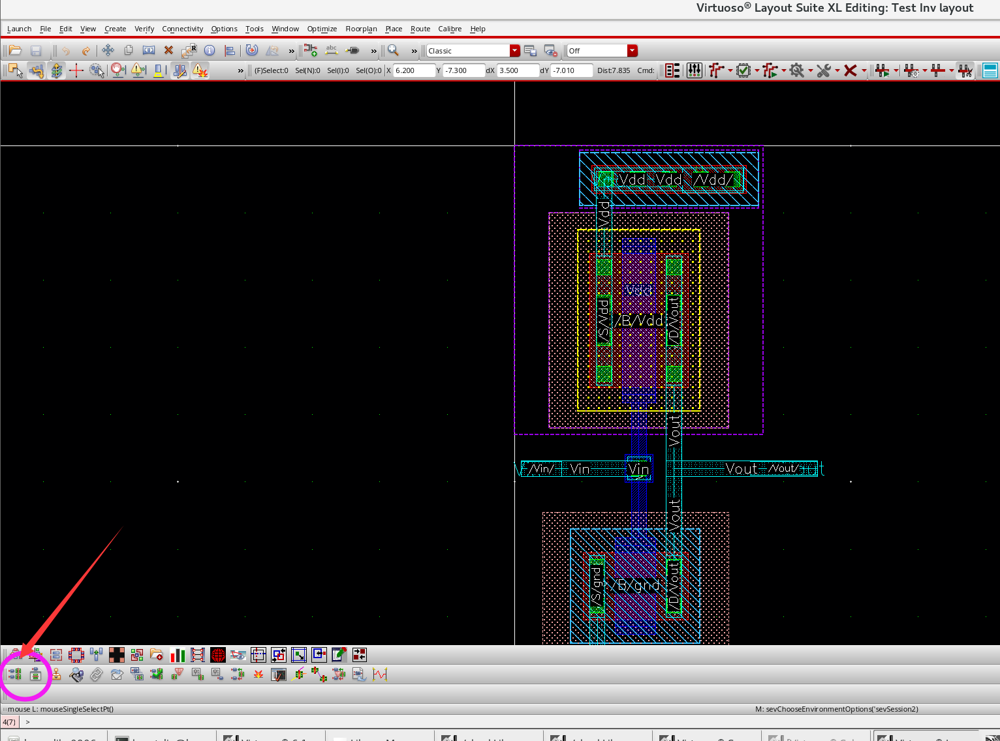
接下来有两种方法，一种是手动添加IOpin，另一种自动添加：
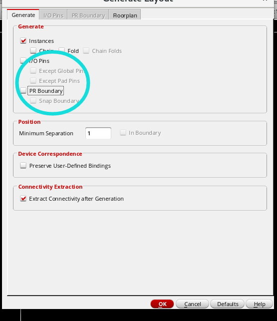
如果自动添加IOpin，注意修改IOpin所在的layer：
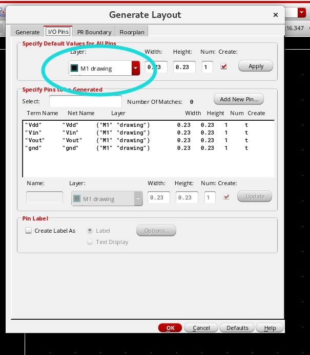
Step2.设置窗口
先按下E键：
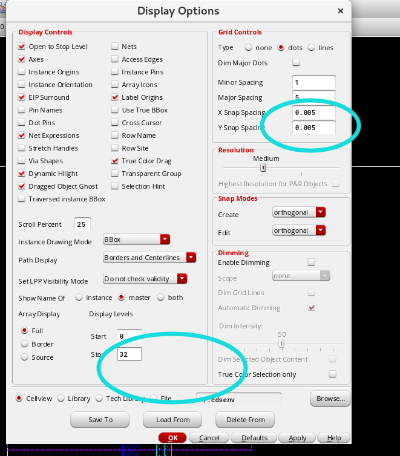
三.DRC检查
· 首先打开Calibre→Run nmDRC(如果没有Calibre的话可以在网上找一下安装Calibre的教程)
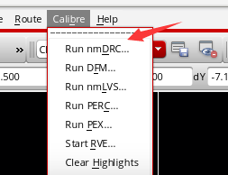
然后修改rule为给定PDK的DRC文件即可
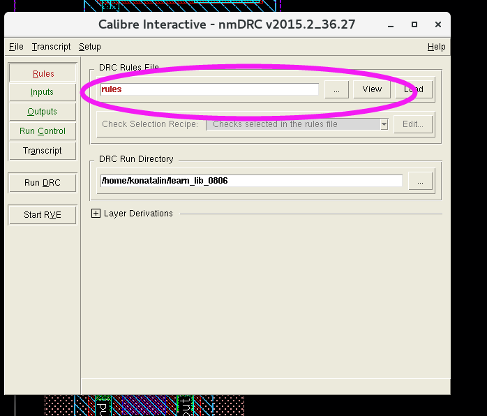
点击Run DRC
四.LVS检查
1.修改rule选项(同DRC中的操作)
2.修改Inputs→Netlist
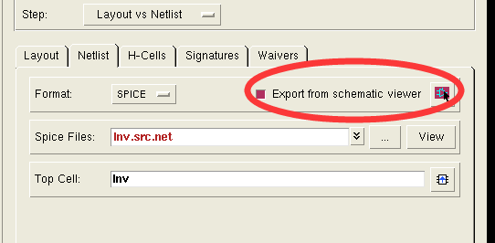
3.点击Setup→LVS Options，并修改：
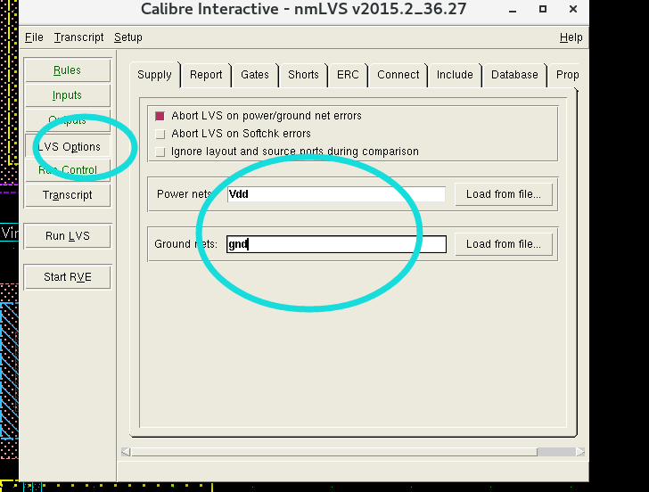
4.修改Unused device options(打开AB、RC):
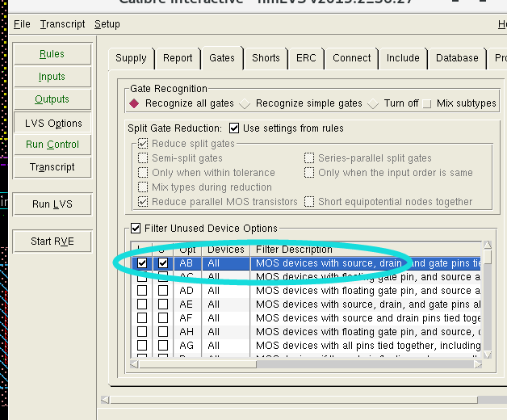
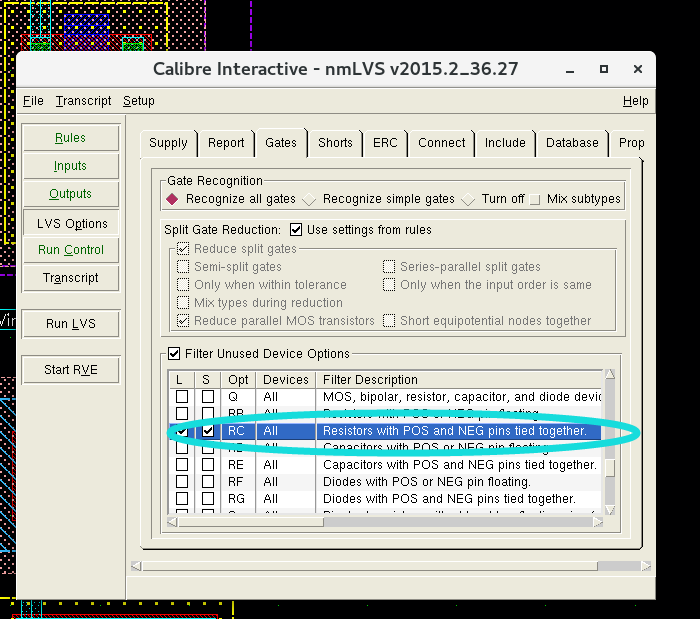
5.如果出现下述内容，请设置Pin角，并且按下L给端口打上Label：
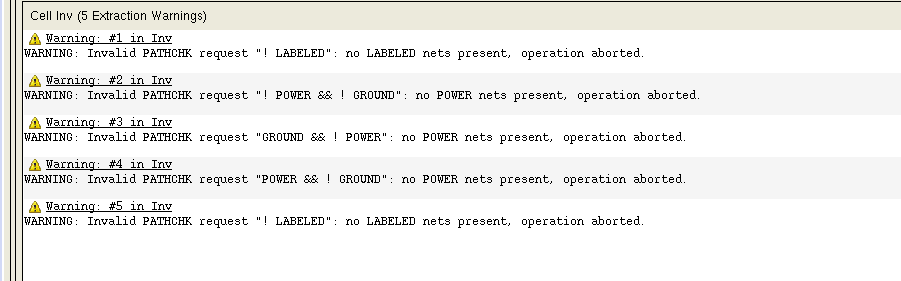
Pin角创建：
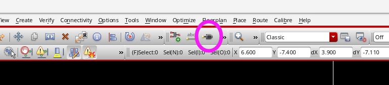
五.PEX后仿参数提取与后仿
1.修改PEX Rules
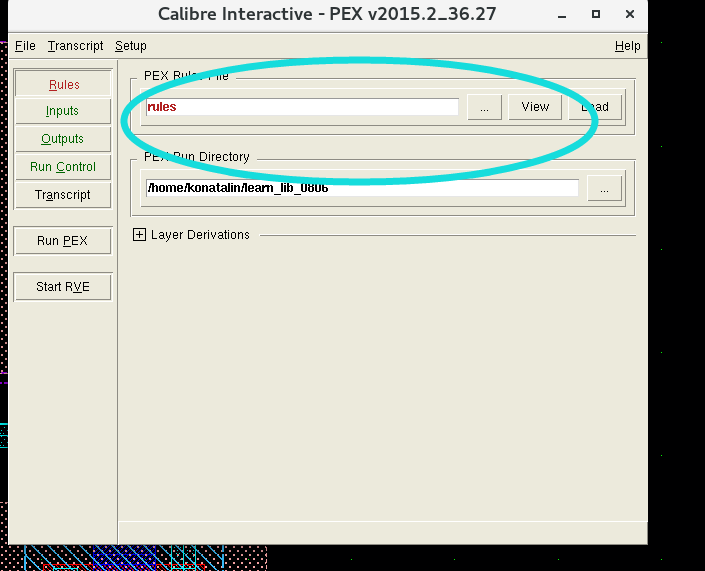
2.Inputs→Netlist修改
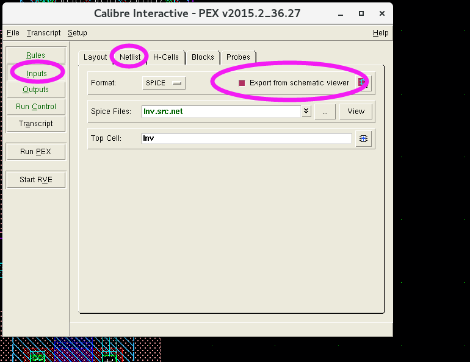
3.进行Outputs选项修改：
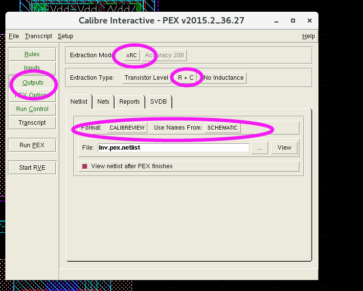
4.设置gnd
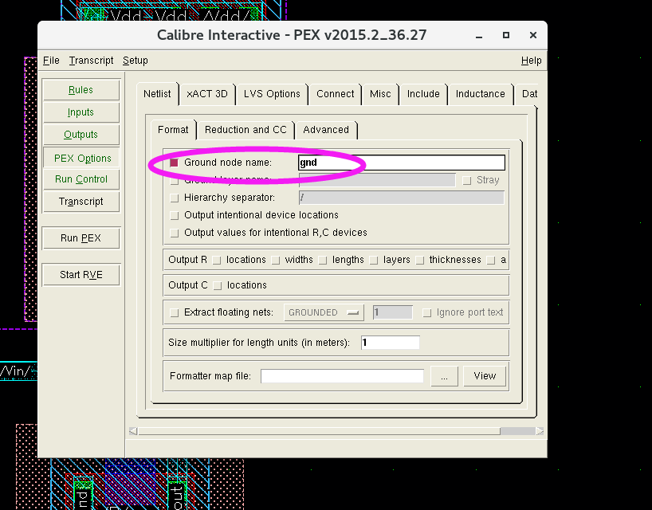
5.设置Vdd、gnd端口
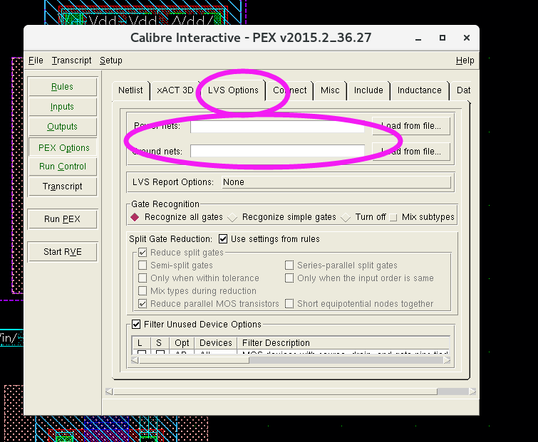
6.设置Include Files(非必须，如果报错了需要做)
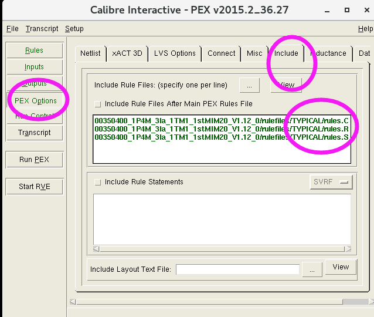
7.设置x-Cells（非必须）
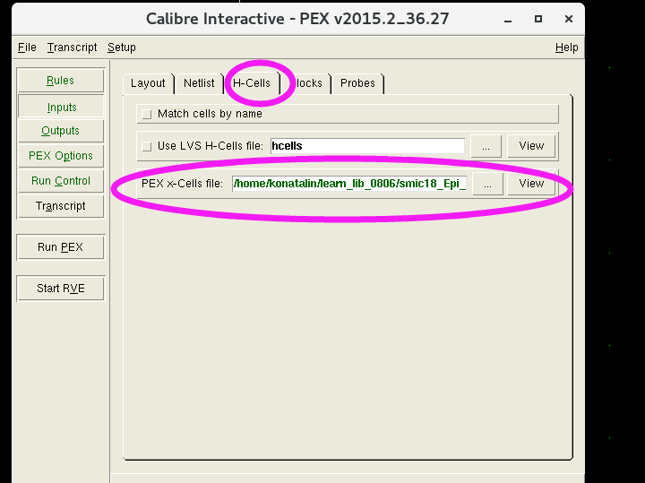
8.单击Run PEX后，跳出如下窗口：需要修改圈中的选项，并且修改Cellview文件（这个Cellview在你的PDK中的Calibre中PEX文件夹里头）
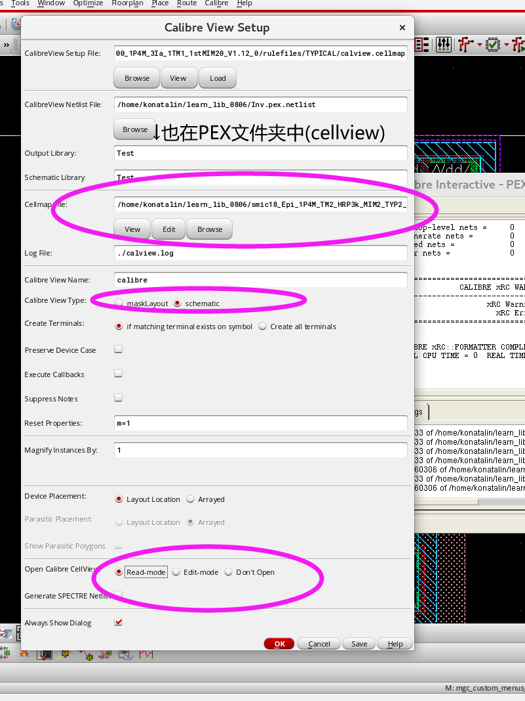
9.单击OK，保存，在原来的Cell中出现Calibre：
检查Calibre中端口是否与原端口一致
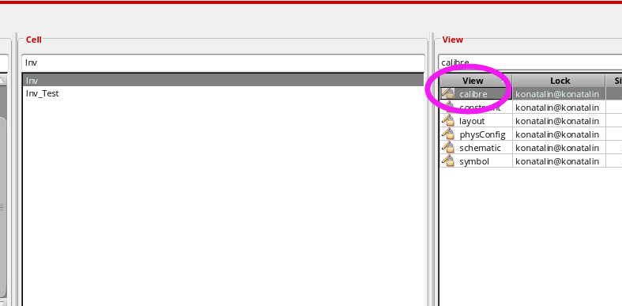
如果不一致，则有两种解决方法:
第一种：把pin角全部改成大写
第二种：在PEX的Rules加入两句话：
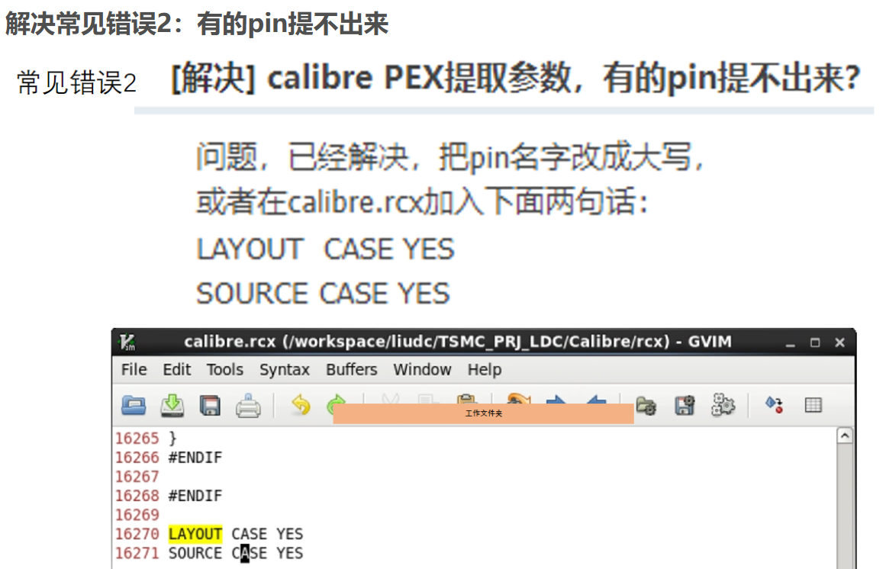
10.创建一个Testbench，并在Setup→Environment中
Switch View List中插入一个calibre，如图所示即可，保存，正常进行仿真
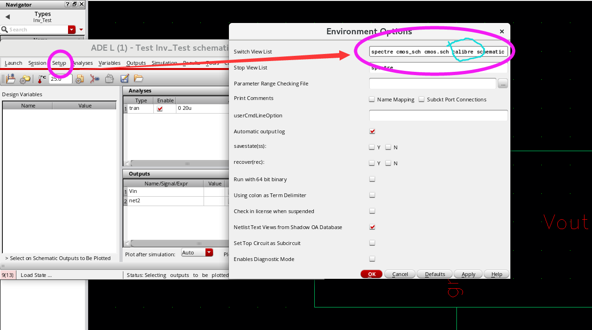
五.设计注意
①layout请在schematic中打开，否则会出现端口不显示的情况
②别忘了画衬底！！！
③pmos的衬底是NWELL，nmos的衬底是sub，别忘了给pmos画NWELL（并且衬底也要画）